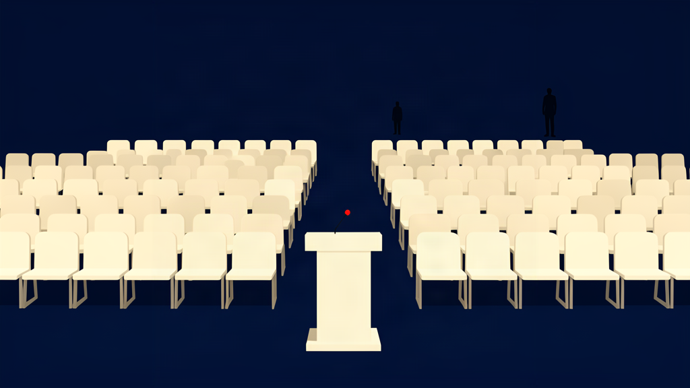
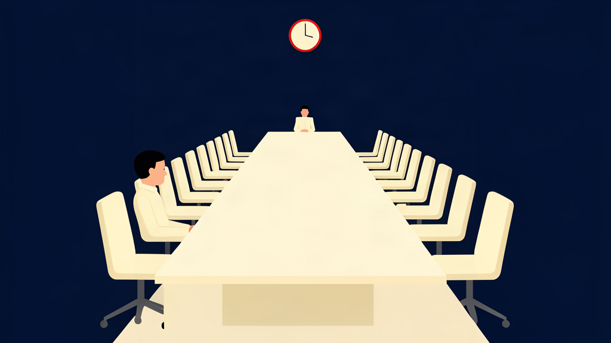
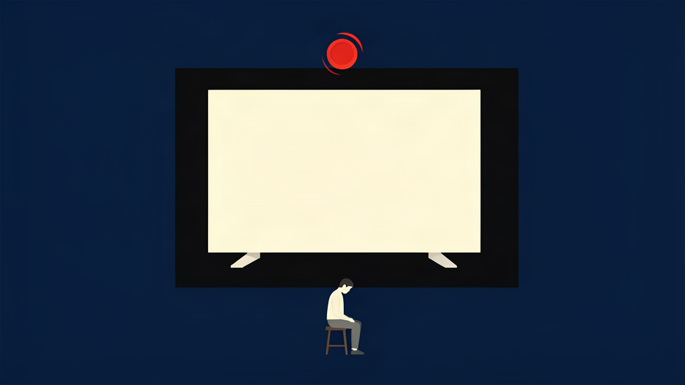

Inside The Mid-Value Boom: Why Discount Retail Off-Floor Pricing Is Having Its Moment
A new wave of secondary-market operators is buying discontinued inventory and reselling at a margin that has quietly caught the attention of larger distributors. We look at what's driving the demand, and who's positioned to capture it.
Earnings Call Runs 52 Minutes And Never Once Answers The Question, Which Is Written On The Company Podium
The quarterly call set a room record by spending fifty-two minutes on confidence, tailwinds, and a sporting moment about the chairman's handicap, without once addressing the one question it walked past on its way to the stage. Analysts called it a masterclass, then admitted they had no idea what the question was either.

Economy Declared Healthy After The Median Household Begins Each Month Already Beating The Market
Data out this morning showed the median household now commits roughly 104% of its monthly income before that income arrives, a condition the Bureau calibrated, with only minor hesitation, as healthy, on the reasoning that a 4% overhang is best read as the family front-loading confidence in its own future.
Federal Reserve Announces It Has Thoroughly Considered The Situation, And Has Chosen, Once Again, To Consider It
Policymakers delivered their decision this afternoon: to remain where they are, having re-read, for the third time this quarter, the same three paragraphs about the same three risks, and having confirmed, to their own satisfaction, that the answer to every question is that the answer is forthcoming.

Real Estate Trust Lists The Air Above Its Building As A Class-AAA Asset, Notes The Sky Has Finally Been Priced
Following what it calls a full evaluation of the vertical asset class, the trust has placed a portion of the sky directly above its flagship tower on the balance sheet, assigning it investment-grade credit on the theory that the air, unlike the tenants, has never once missed a payment.

We Sent Someone To The Seven-Hour Seminar On Not Knowing Your Fees, And Nobody At It Blinked Once
Our reporter attended the advisory industry's flagship event, where presenters explained, with total and unbroken seriousness, that a client who does not know what they pay cannot properly value what they receive, and confirmed that the informed client is a stressed client. Nobody in the room, including the reporter, has blinked since.

Guaranteed Return Bond Ships With An Asterisk Large Enough That It Contains Its Own ZIP Code
The offering's headline promised 8% guaranteed by management, a phrase that, on page 147, turns out to be guaranteed by a reserve fund that is itself guaranteed by the same management, which is guaranteed, in turn, by a smaller fund that is guaranteed by the asterisk.